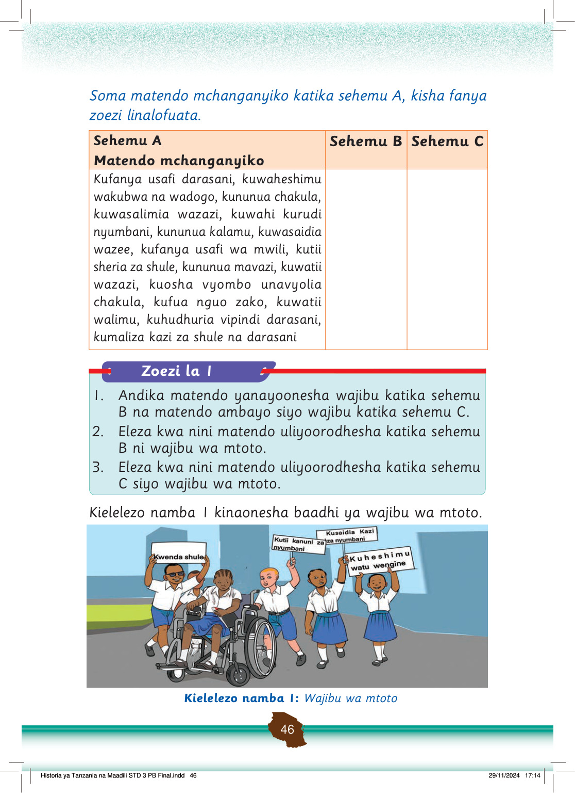

Soma matendo mchanganyiko katika sehemu A, kisha fanya zoezi linalofuata.
Sehemu A
Matendo mchanganyiko
Sehemu B
Sehemu C
Kufanya usafi darasani, kuwaheshimu wakubwa na wadogo, kununua chakula, kuwasalimia wazazi, kuwahi kurudi nyumbani, kununua kalamu, kuwasaidia wazee, kufanya usafi wa mwili, kutii sheria za shule, kununua mavazi, kuwatii wazazi, kuosha vyombo unavyolia chakula, kufua nguo zako, kuwatii walimu, kuhudhuria vipindi darasani, kumaliza kazi za shule na darasani
1.
Andika matendo yanayoonesha wajibu katika sehemu B na matendo ambayo siyo wajibu katika sehemu C.
Kufanya usafi darasani, kuwaheshimu wakubwa na wadogo, kuwasalimia wazazi, kuwahi kurudi nyumbani, kuwasaidia wazee, kufanya usafi wa mwili, kutii sheria za shule, kuwatii wazazi, kuosha vyombo unavyolia chakula, kufua nguo zako, kuwatii walimu, kuhudhuria vipindi darasani, kumaliza kazi za shule na darasani
Kununua chakula, kununua kalamu, kununua mavazi
Kufanya usafi darasani, kuwaheshimu wakubwa na wadogo, kuwasalimia wazazi, kuwahi kurudi nyumbani, kuwasaidia wazee, kufanya usafi wa mwili, kutii sheria za shule, kuwatii wazazi, kuosha vyombo unavyolia chakula, kufua nguo zako, kuwatii walimu, kuhudhuria vipindi darasani, kumaliza kazi za shule na darasani
Kununua chakula, kununua kalamu, kununua mavazi
Zoezi la 1
Kielelezo namba 1 kinaonesha baadhi ya wajibu wa mtoto.
Watoto wa shule wanatembea pamoja, na mmoja yuko kwenye kiti cha magurudumu. Wameinua mabango yanayoonyesha wajibu wa mtoto kama kwenda shule, kutii kanuni za nyumbani, kusaidia kazi za nyumbani, na kuheshimu watu wengine.
Kielelezo namba 1: Wajibu wa mtoto
2.
Eleza kwa nini matendo uliyoorodhesha katika sehemu B ni wajibu wa mtoto.
3.
Eleza kwa nini matendo uliyoorodhesha katika sehemu C siyo wajibu wa mtoto.